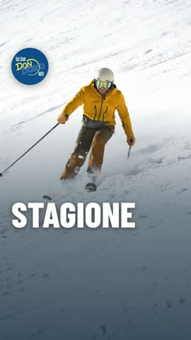
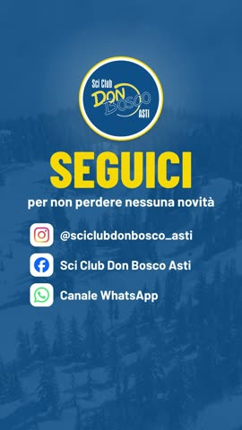

Ci trovi anche qui!
Il nostro profilo TikTok
Seguici!
- 1Apri TikTok › Cerca
- 2Scrivi Sci Club Don Bosco Asti
- 3Premi Segui sul nostro profilo
Gite, piste e serate in video: guardale qui.
VideoPreferiti


Gite, piste e serate in video: guardale qui.

